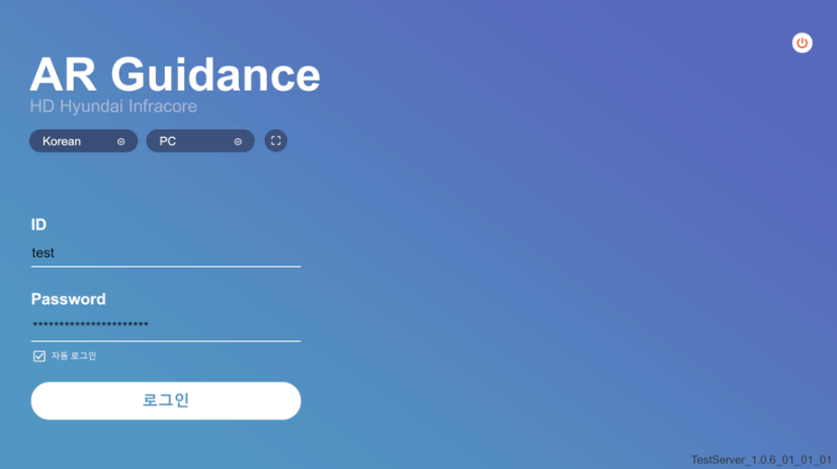
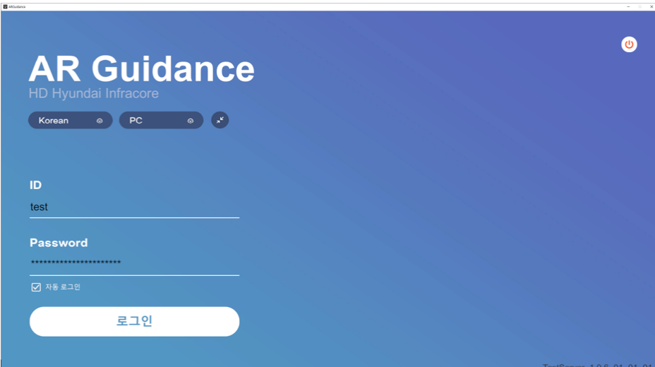
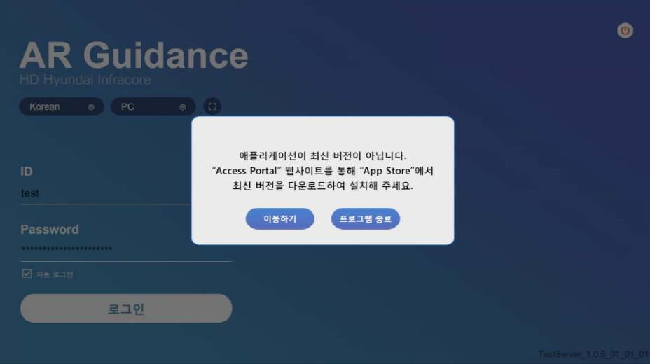
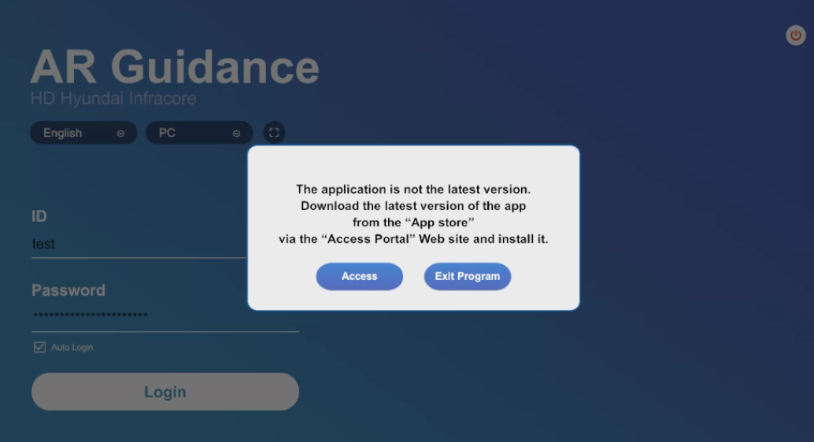

AR Guidance
Name : 김민규
HP : 010-2766-8879
Email :
cicg0205@naver.com
 |
|
 |
|
이 화면은 로그인 화면입니다.
-로그인(수동) : UnityWebRequest 활용한 HTTP 통신으로 계정 정보를 확인
-로그인(자동) : 서버로 부터 부여받은 Token으로 확인 후, 로그인
-화면 모드 : 창모드, 전체화면 모드
-버전 확인 팝업 : 최신버전이 아닐 경우 앱스토어(현대인프라코어) 연결을 위한 웹사이트 연결
|  |
|
 |
|
|  |
|
 |
|
이 화면에서는 중장비 종류에 따라 모델을 선택하고 컨텐츠를 선택할 수 있는
장비와 모바일 디바이스 간 원격 통신으로 실시간 장비 상태 모니터링
장비 고장 발생 시, 3D AR로 관련 고장 부위 표시 및 조치 방법 안내
3D AR 기반 장비 성능 시험 AR 가이드 및 측정 툴 제공
3D로 장비의 구조를 살펴보는 컨텐츠